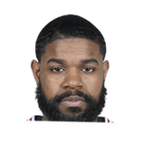

“I think [Celtics president of basketball operations] Danny [Ainge] picked some of these guys [based on their desire to help Boston build]. I think we’ve brought in guys, just as an example, David Lee and Amir Johnson, we’re not bringing in divas,”

What NBA players and coaches have said about Amir Johnson
6 quotes about Amir Johnson from 5 players, coaches and executives, newest first. Each one links to its original source.
Best quotes
Dwane Casey on the core players in Toronto:
“Andrea (Bargnani) is definitely a piece of the core that we have to utilize. He’s our star. DeMar Derozan is definitely an athletic part of our core, Jose Calderon, Jerryd Bayless, James Johnson is in that group, and Amir Johnson. You’ve got the core now. The part you may have to add is a veteran piece, a veteran defender or whatever along with our draft pick is something that I’m sure Bryan and the staff are going to look at, but the core pieces are there to build on to use as building blocks. Those guys are the guys were gonna push, cajole, put an arm around, or whatever it takes to get to that next level.”
Head coachDwane Casey was also disappointed in the officiating, particularly the non-call on Johnson.
“I hope the league looks at that last play of the game when Amir Johnson gathers the shot going up,”
What Amir Johnson has said about other players and coaches →
Quotes per season
Who talks about Amir Johnson most
 Dwane Casey on Amir Johnson2 quotes
Dwane Casey on Amir Johnson2 quotes- Brad Stevens1 quote
 DeMar DeRozan1 quote
DeMar DeRozan1 quote Rudy Gobert1 quote
Rudy Gobert1 quote- Wyc Grousbeck1 quote
Back and forth
- Amir Johnson and Dwane Casey3 quotes
2015-16
4 quotesJody Genessy:Rudy Gobert on Amir Johnson's late offensive board:
“I felt my jersey and my arm being pulled, but, I don't know, maybe it was in my head.”
Marc D'Amico:Brad Stevens on Amir Johnson's recent play:
“I do think Amir has played really well (since we plugged Kelly Olynyk into the starting lineup”
Sean Deveney:DeRozan on trash talking @Amir Johnson:
“I couldn't do it. It would be more funny than anything. I wouldn't be able to take it seriously.”
“I think [Celtics president of basketball operations] Danny [Ainge] picked some of these guys [based on their desire to help Boston build]. I think we’ve brought in guys, just as an example, David Lee and Amir Johnson, we’re not bringing in divas,”
2012-13
1 quoteHead coachDwane Casey was also disappointed in the officiating, particularly the non-call on Johnson.
“I hope the league looks at that last play of the game when Amir Johnson gathers the shot going up,”
2010-11
1 quoteDwane Casey on the core players in Toronto:
“Andrea (Bargnani) is definitely a piece of the core that we have to utilize. He’s our star. DeMar Derozan is definitely an athletic part of our core, Jose Calderon, Jerryd Bayless, James Johnson is in that group, and Amir Johnson. You’ve got the core now. The part you may have to add is a veteran piece, a veteran defender or whatever along with our draft pick is something that I’m sure Bryan and the staff are going to look at, but the core pieces are there to build on to use as building blocks. Those guys are the guys were gonna push, cajole, put an arm around, or whatever it takes to get to that next level.”